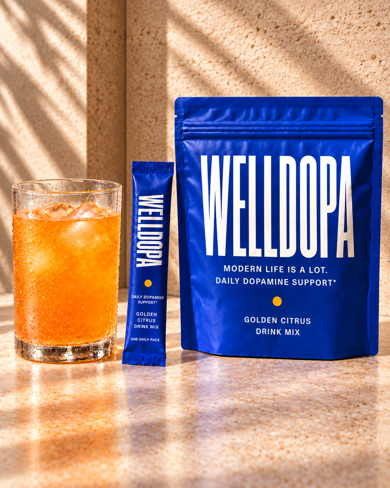
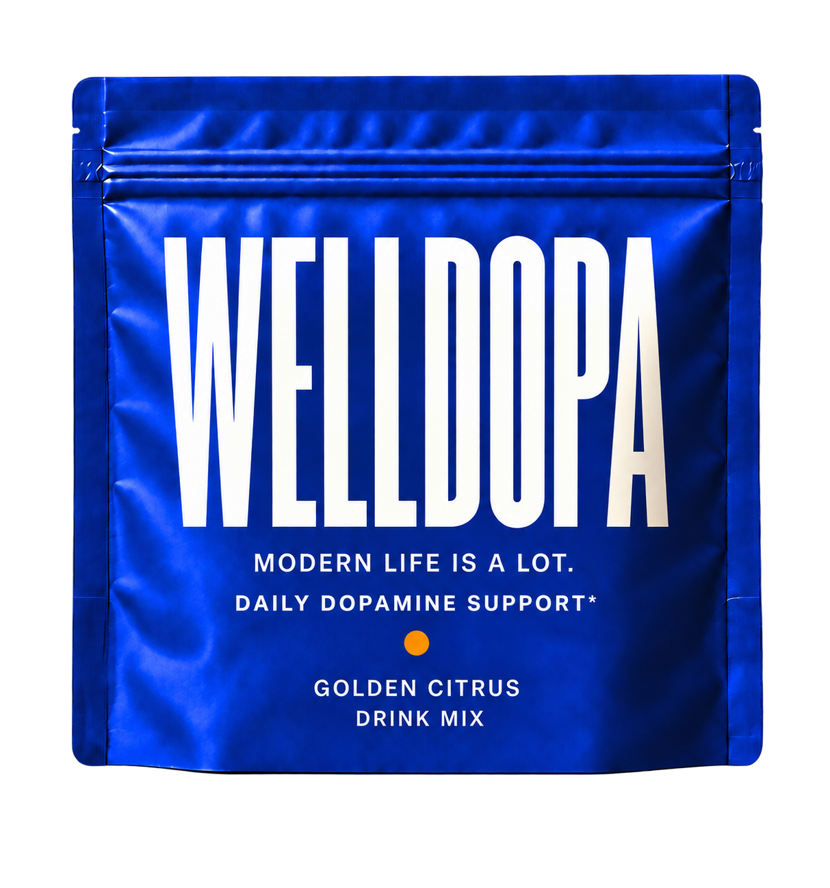
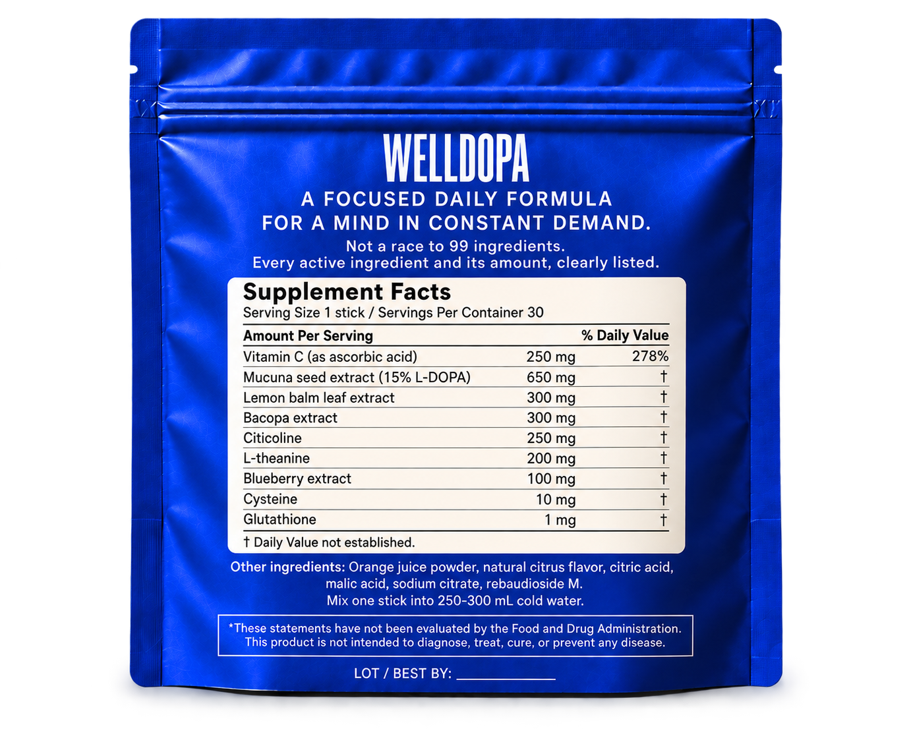
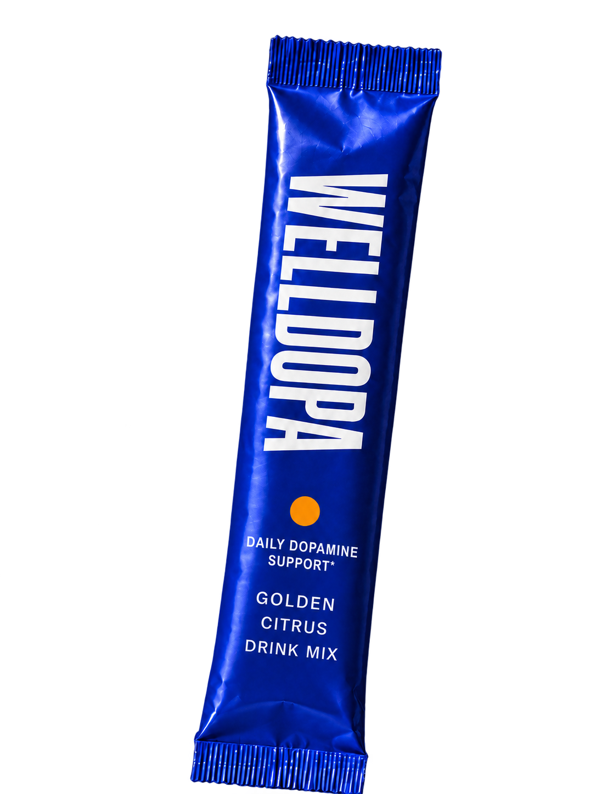

GOLDEN CITRUS / DAILY DOPAMINE SUPPORT*
MODERN
LIFE IS
A LOT.
A little more room for your thoughts.
FOLLOW THE LINE*Working claim under scientific and regulatory review. Product and packaging in development.

MESSAGES.
SCROLLING.
CONSTANT SWITCHING.
SO MUCH
INPUT.
And the day isn't slowing down. We are developing a Golden Citrus drink mix for a mind in constant demand, built around a deliberate formula rather than an impressive-sounding count.
THE BIOLOGICAL STARTING POINT
FROM THE SEED
TO THE SIGNAL.
Mucuna seed extract naturally contains L-DOPA. The body can convert L-DOPA into dopamine. That is the ingredient rationale behind WellDopa.
- 01 / THE PLANTMUCUNAA botanical seed extract
- 02 / THE PRECURSORL-DOPANaturally present in Mucuna
- 03 / THE BODY'S CHEMISTRYDOPAMINEMade from L-DOPA in the body
This pathway does not establish that the finished drink restores dopamine or produces a cognitive benefit. Claim language and the final formula remain under review.
LESS NOISE.
MORE SIGNAL.
FIND YOUR LINE
THROUGH THE DAY.
GOLDEN CITRUS / THE COLOR AT THE END OF THE LINE
THE POUCH / FRONT
A CLEAR
SIGNAL ON A
CROWDED
COUNTER.
Cobalt to find at a glance. An orange dot that carries through from package to glass. The working dopamine-support line makes the idea visible on the object itself.

AMOUNTS
OVER COUNT.
More ingredients do not automatically make a drink more effective. We are choosing ingredients for a reason and showing the proposed amount of every active on the back.

WORKING AMOUNTS PER STICK
- Vitamin C
- 250 mg
- Mucuna seed extract (15% L-DOPA)
- 650 mg
- Lemon balm leaf extract
- 300 mg
- Bacopa extract
- 300 mg
- Citicoline
- 250 mg
- L-theanine
- 200 mg
- Blueberry extract
- 100 mg
- Cysteine
- 10 mg
- Glutathione
- 1 mg
Other ingredients: orange juice powder, natural citrus flavor, citric acid, malic acid, sodium citrate, rebaudioside M.
OPEN CONCEPT LABEL AT FULL SIZE ↗Working formulation. Final formula and label may change before launch.BEHIND THE WORKING FORMULA
WHY EACH ONE
IS HERE.
The full list stays visible above. Open an ingredient for the simple three-part story: what it is, how much is in one stick, and why we are exploring it.
01Mucuna seed extract650 mg
- 01 / THE PLANTMUCUNA
A seed extract that naturally contains L-DOPA.
- 02 / THE PRECURSORL-DOPA
Standardized to 15% L-DOPA: approximately 97.5 mg from 650 mg of extract.
- 03 / THE BODY'S CHEMISTRYDOPAMINE
The body can convert L-DOPA into dopamine. This is the biological idea behind WellDopa.
02L-theanine200 mg
- 01 / WHAT IT ISAMINO ACID
A naturally occurring compound also found in tea.
- 02 / THE AMOUNT200 MG
In each daily stick.
- 03 / WHY IT IS HEREATTENTION + STRESS
Studied for attention and responses to stress, making it relevant to a mind in constant demand.
03Citicoline250 mg
- 01 / WHAT IT ISCHOLINE SOURCE
Citicoline supplies choline, a nutrient used by the body.
- 02 / THE AMOUNT250 MG
In each daily stick.
- 03 / WHY IT IS HEREATTENTION
Included because citicoline has been studied for attention.
04Lemon balm leaf extract300 mg
- 01 / WHAT IT ISBOTANICAL LEAF
An extract of lemon balm leaves.
- 02 / THE AMOUNT300 MG
In each daily stick.
- 03 / WHY IT IS HERESTRESS + ATTENTION
Selected because lemon balm extracts have been studied in stress-and-attention settings.
05Bacopa extract300 mg
- 01 / WHAT IT ISBOTANICAL EXTRACT
An extract of the Bacopa monnieri plant.
- 02 / THE AMOUNT300 MG
In each daily stick.
- 03 / WHY IT IS HEREMEMORY
Studied for memory with consistent daily use over weeks.
06Vitamin C250 mg
- 01 / WHAT IT ISESSENTIAL NUTRIENT
Vitamin C, supplied as ascorbic acid.
- 02 / THE AMOUNT250 MG
In each daily stick.
- 03 / WHY IT IS HERENUTRITIONAL SUPPORT
Vitamin C has established nutritional and antioxidant roles.
07Blueberry + two companions111 mg total
- 01 / WHAT IT ISTHREE-PART PREPARATION
Wild blueberry extract together with L-cysteine and L-glutathione.
- 02 / THE AMOUNTS100 + 10 + 1 MG
100 mg blueberry extract, 10 mg cysteine, and 1 mg glutathione per stick.
- 03 / WHY IT IS HEREMEMORY RESEARCH
This combination has been studied for memory. Cysteine and glutathione belong to that combination; we are not presenting them as separate benefit doses.
Ingredient research explains the choices. It does not establish the benefits of the finished drink. Product and packaging are in development.
GOLDEN CITRUS / DRINK MIX
ONE
STICK.
THEN
THE DAY.
Mix one stick in cold water. Built for the pace of real life.
ONE DAILY SERVING / WORKING CLAIM ON PACK

WELLDOPA / A FIRST LOOK
MORE ROOM.
SAME PACE.
Golden Citrus. A focused daily formula for a mind in constant demand.
BACK TO THE TOP ↑PRODUCT AND PACKAGING IN DEVELOPMENT. NOT AN OFFER FOR SALE.